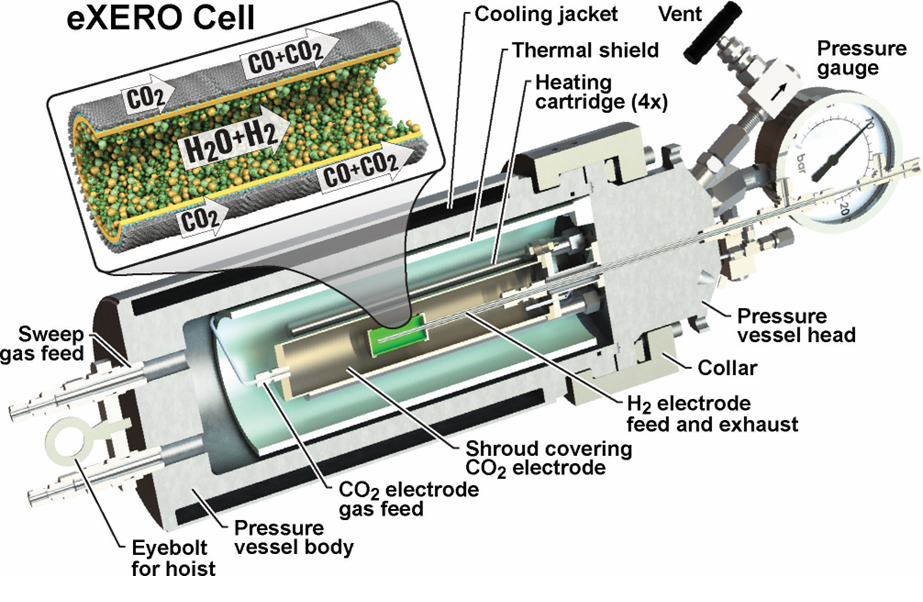

Test Stand Design and Construction
Summary
I have spent three years working at the Colorado Fuel Cell Center (CFCC) at the Colorado School of Mines, where I have contributed to research on renewable energy solutions focused on efficient power generation and green hydrogen production. The CFCC specializes in advancing fuel cell and electrolyzer technologies, developing custom testing structures for applications ranging from single-cell materials research to full-scale 36kW stacks with high Technology Readiness Levels. These systems are meticulously designed to operate under high pressures and temperatures, addressing the critical challenges of real-world deployment.
These projects demonstrate my expertise in system planning, design, budgeting, construction, machining, programming, system integration, PCB design, electrical work, pressurized and high-temperature systems, insulation, troubleshooting, and applying the scientific method.
eXero Project: High-Temperature & Pressure Electrochemical Reactor Test Stand
Funded by the U.S. Department of Energy and Utility Global, a renewables startup, the eXero project investigates Utility’s high-temperature, high-pressure electrochemical reactor technology. This test stand was designed to collect performance data under precisely controlled conditions. The system is designed to operate at temperatures and pressures as high as 900°C and 10 bara.
I contributed to this project from initial planning through material testing, focusing on designing the computer control system and leading key aspects of construction. The resulting test stand provides CFCC with a reliable, high-performance tool for ongoing and future research.
Below are links and images detailing the test stand.
Download Process Flow Diagram
Chamber Interior and Process
Test Stand
LabView Front Panel
BPX Methane Sensing Project
Originally an unfunded initiative, the BPX Methane Sensing Project was a unique, one-off research effort within the Colorado Fuel Cell Center (CFCC). It later secured funding from BPX Energy, a division of British Petroleum (BP). The project aimed to enhance the accuracy and precision of low-cost methane sensors by collecting extensive data in controlled artificial environments.
I independently designed and built the fully automated test stand, including its computer control system, a first for CFCC. The stand maintained stable testing conditions across a temperature range of freezing to 45°C and 5% to 80% relative humidity. Over the course of testing, it collected 4 GB of raw data, equating to approximately 120 million sensor readings. In collaboration with a data analyst, CFCC used this data to develop a computational model for improving sensor accuracy.
Below are images showcasing the test stand.
Test Stand, Components, and PFD
LabView Front Panel
Integrate Project: 36kW Fuel Cell Stack Integration
The Integrate Project stands as the crowning achievement of the Colorado Fuel Cell Center (CFCC) and received the largest government funding package in Colorado School of Mines' history at the time of its approval.
This project focuses on optimizing a 36kW fuel cell stack developed by Ceres Power (UK). Weighing 1.5 tons, the stack was designed not only for research but also to feed power back into the Mines campus grid—a major institutional milestone. The system is designed to operate at temperatures and pressures as high as 600°C and 10 bara.
My contributions included completing electrical CAD designs for integrating the system with the grid, assisting in reconstructing pressurized plumbing, and performing testing operations.
Below are links and images showcasing the testing structure. (PFD drawn by a colleague)
See more under "36-kWe, Grid-connected, Pressurized Solid-oxide Fuel Cell and Electrolyzer Test Bed"